The HorrorStudio Weapons plugin
A double-barrelled shotgun held in first person, for a Godot game you build by hand: your own model, only its barrels in the view, a barrel a click, broken open in front of you to load, lowered and raised, found lying in a room. No hands on it. Its muzzle flashes your way, and what it does to a wall is a 12-gauge's, close up and down a corridor. Made for horror: one heavy gun, two shells in it, every shell counted.
1What it is
One add-on, addons/horrorstudio_weapons/, with nothing to build: HSDoubleBarrel (the gun
you carry) and HSWeaponPickup (the gun, or a box of shells, lying somewhere). The model is your own
(Content/Studio/Props/models/dbl_barrel.fbx), made by the prop generator into shotgun_double: its
barrels made round, blued, the action case-hardened, the walnut checkered; its barrels drop on their hinge, the top
lever turns, both triggers move, and its sockets (each muzzle, each chamber, where a flashlight goes) tell the plugin
where everything is. The shells are shell_12ga and shell_12ga_spent; the sounds are made in code.

shotgun.gd still loads: that file is the double now.2Try it first
The plugin's own check builds a whole project to play: Tutorial v2's hotel floor at night, the starter's player with the double barrel and its flashlight, a box of shells on the carpet and two boxes to shoot. Keep it in a folder of your own and open it in Godot:
python tools/godot/weapons_check.py --keep ~/Games/ShotgunRange godot ~/Games/ShotgunRange/project.godot # then F5
(From the project folder, as the other guides' commands. It plays itself through once headless first, the check, and
says WEAPONS ok.)
Click into the window to take the mouse, then Left click, Right button, R, Q, E on the box. It's the same project the pictures here come from.
3Putting it in a project
A new project made by tools/godot_byhand.py has it already, enabled, beside the Look and UI plugins and the
starter kit:
python tools/godot_byhand.py new ~/Games/MyGame python tools/godot_byhand.py install ~/Games/MyGame # a project you have: the plugins again, the starter left alone
In Project › Project Settings › Plugins it's HorrorStudio Weapons.
4The shotgun under the camera
- Open your player (the starter's
player.tscn, or your own) and select its camera, Eye. - Add Child Node, type
HSDoubleBarrel, and name it Shotgun. The gun appears in the editor where it'll be held (a preview: nothing of it is saved). - Set Light to the flashlight (Eye/Flashlight): while the gun is up the flashlight is carried under its barrels, its beam along them; lowered, it's back where it was.
- Tune the hold in the Inspector and watch the preview move: Hold (where the breech sits from the eye, in metres), Aim At M (where the barrels' line crosses the middle of the view), Cant Deg (leaned in). The flashlight's beam stays on the middle of the view (Beam At M) whatever the barrels' angle.
- Not carried from the start? Untick Owned and put a pickup where it lies (section 10).


5Playing it
| Left click | fire a barrel: the right (the front trigger), then the left (the rear one), then a click. Nine pellets each from the middle of the view, through that barrel's own choke (the right's a little wider than the left's). It's ready as fast as you pull. |
| Right button | held: aimed, the barrels straight ahead under your eye, the lens a little narrower, the sway calmer. The pattern stays the barrel's own: a choke doesn't change when you aim. |
| R | break it open and load (section 6). A click while it's open stops the loading and fires once it's shut. |
| T | the kind of shell R loads next (buckshot, explosive: section 8). What's already in a chamber stays. |
| Q | lower it out of view, and raise it again. |
| Shift | running (the starter's), it's carried low and turned in; it comes up again as you aim, shoot or reload. |
| E | take a pickup (the starter's player). |

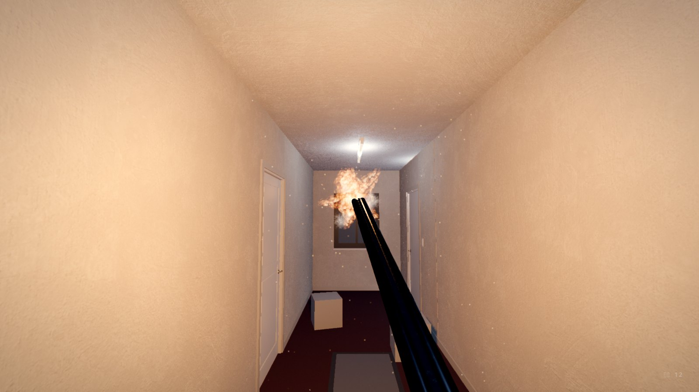
What the pellets do where they land depends on how far the wall is (section 9): one torn hole from close up, a
pattern a palm wide across a room. They push what can move and tell what they hit if it has a shot(info)
method. A shot is loud: every listener hears it (the starter's searcher comes for it) and your ears ring for a moment
(the Fear node). The shells show low on the right as two marks, the right barrel's and the left's (filled where
there's a live shell), and the pocket's count: faint at rest, clear for a moment when they change.
6The reload: breaking it open
R brings the gun up near your eye and breaks it open there: the top lever over, the barrels dropping away to the left, the stock down to the right, the chambers in the middle of the view. The ejectors flick the fired hulls up and out over your shoulder (a live shell stays where it is), a shell pops into each empty chamber, and it snaps shut and goes back down: 1.6 s for two. A full gun is broken open and shut again: a look into it.
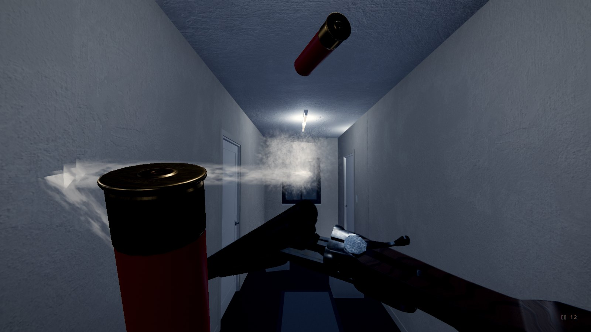
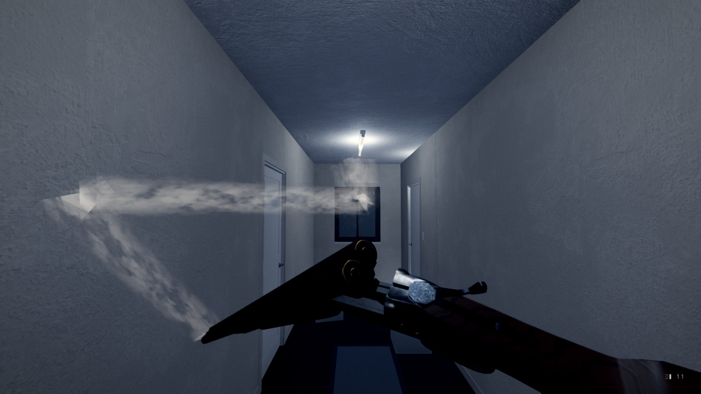

7The muzzle flash and its smoke
Every gun's muzzle is an HSMuzzle: the double makes one a barrel. It's made for any gun: put one
at the end of another gun's barrel (its blue arrow, -Z, along the barrel) and call fire() when it shoots. How
it flashes is an HSMuzzleFlash, a resource (muzzle/buckshot.tres,
muzzle/explosive.tres), drawn your way:
- Each wing is a series of slightly elongated spheres that intersect, their fronts culled. Five wings round the bore (a star seen from in front), a plume of fire straight out of it and a white core at the muzzle. Every shot lays them out again, never twice the same.
- A noise is mapped triplanar onto each sphere and blended by the view's normal dotted with the surface's, the blend a burn: where you look at a sphere's middle the noise shows (white-yellow where it's bright, orange where it isn't), toward its rim it burns away, red at the edges where it burns out. Where spheres overlap the fire adds up.
- Then smoke: a cloud thrown out with the shot, and smoke trailing from the muzzle for a second and a half after, wherever the gun goes (swung round, broken open, lowered), left behind in the air. It leaves the barrel thick and straight, then curls, rises and parts into wisps that fray as they age; a gun held still sends up a curling thread. It's made the way real-time games make smoke trails: soft sprites along a smoothed curve through where the muzzle has been (no corners, nothing to fold), drifting in curl noise, all of them and the cloud's puffs reading one noise in the air so they're one smoke, worn away by it as they age, and faded where they meet a wall or the gun.
- The second barrel through the first's smoke: the left barrel fires into the cloud the right left a quarter second before. The flash lights it from inside, but no brighter than Smoke Light Cap, and a thick cloud glows its own lit colour rather than adding up to white: the second star shows through it.
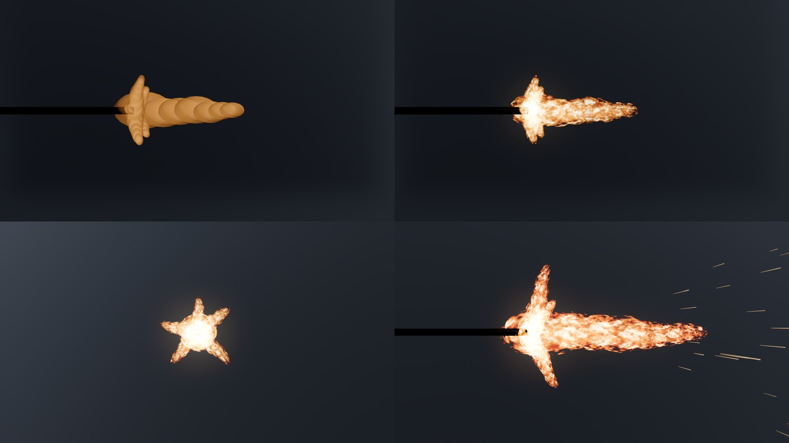
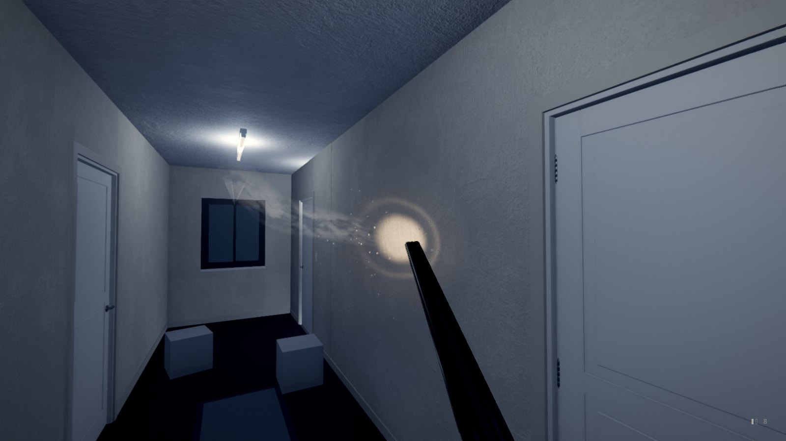
Making your own flash
Duplicate muzzle/buckshot.tres (FileSystem, right-click,
Duplicate) and open it in the Inspector: Wings (how many, how far they lean, how long, how many spheres, how
stretched), Plume, Fire (its colours, how bright, the noise's size, how hard it burns, how fast it burns
away, Blend Add for a glow or Solid for crisp orange edges), Light, Sparks, Smoke (the puffs, the
trail: how long, how wide, how many strands and how far they part, how much it curls and frays; its glow and how much
light it takes). To watch it as you change it, add an HSMuzzle to a
scene, give it your flash and tick Preview: it shows frozen at Preview Age (0 the first frame);
Preview Seed lays it out another way.
8Kinds of shell
Every shell has a kind, an HSShellType resource: what it fires, how the muzzle flashes with it, what it does where it lands and what it looks like. Two come with the plugin:
Buckshot
shells/buckshot.tres, the normal one: nine pellets in the barrel's cone,
the red shell, the flash above, the wall damage of section 9.
Explosive
shells/explosive.tres: one slug in a tight cone, a bigger, fiercer flash
with a spray of sparks, and where it lands it bursts (section 9). A black shell printed in orange, its own box.
The gun keeps every shell's kind, each barrel's: an explosive in the right barrel and buckshot in the left fire as they are. Your pocket keeps them by kind. T picks the kind R loads; the shells' marks low on the right show a shell of another kind in its colour (orange for the explosive), and a dot of it under the pocket's count while it's the kind you're loading. A box of them is an HSWeaponPickup of kind shells with its Shell set to the kind.
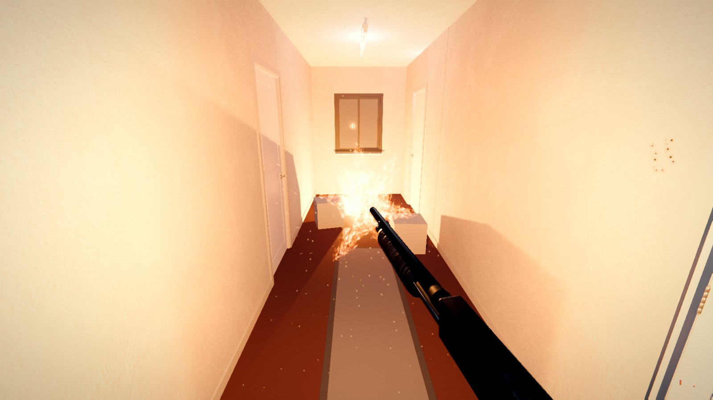
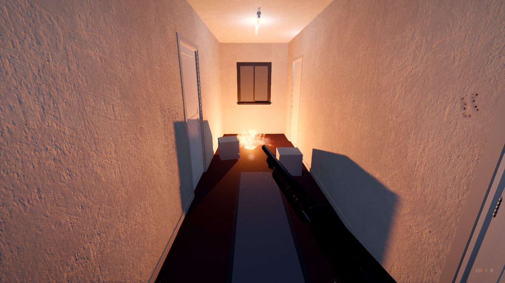
A kind of your own
Duplicate shells/buckshot.tres, give it an Id and a
Title, change what it fires (Pellets, 0 for the gun's own; Spread Scale, Damage, Recoil
Scale...), give it a Muzzle (a flash of your own, above), an Impact (duplicate impacts/pellet.tres)
and its Model and Spent Model (a shell from the prop generator: the ammo family's are customizable), and a
Color for its marks. Add it to the gun's Kinds and put a box of it in a room.
9What a shot leaves
What a 12-gauge does to a wall depends on how far the muzzle was from it. The plugin follows what pattern tests and
the forensic books describe (docs/research/shotgun_damage.md). The pattern spreads from the muzzle, so the
closer you are, the tighter it lands:
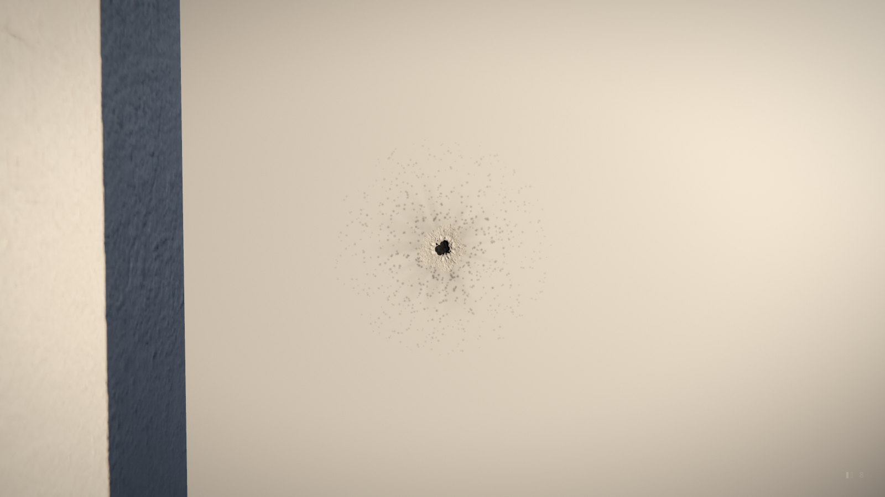
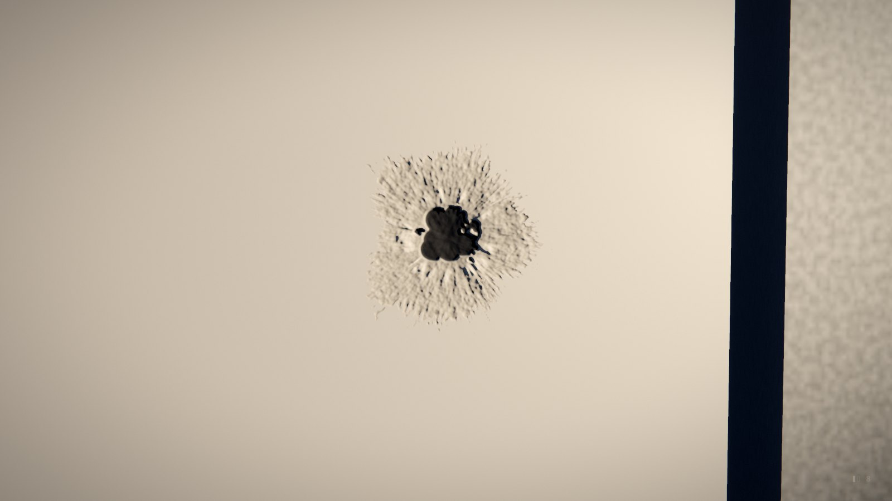
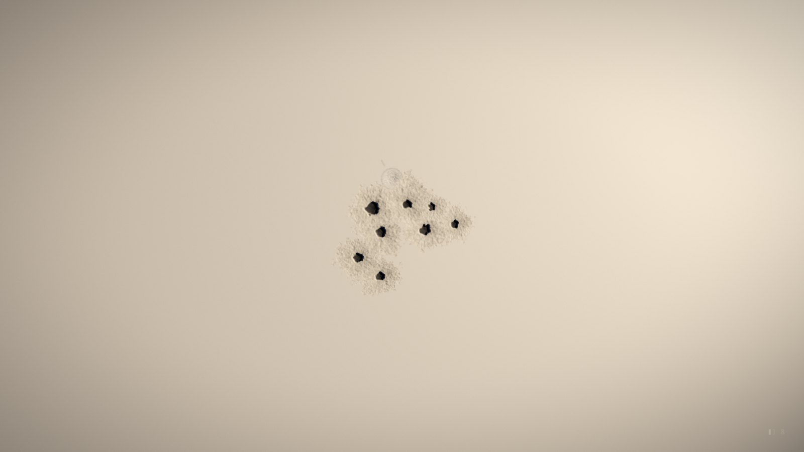
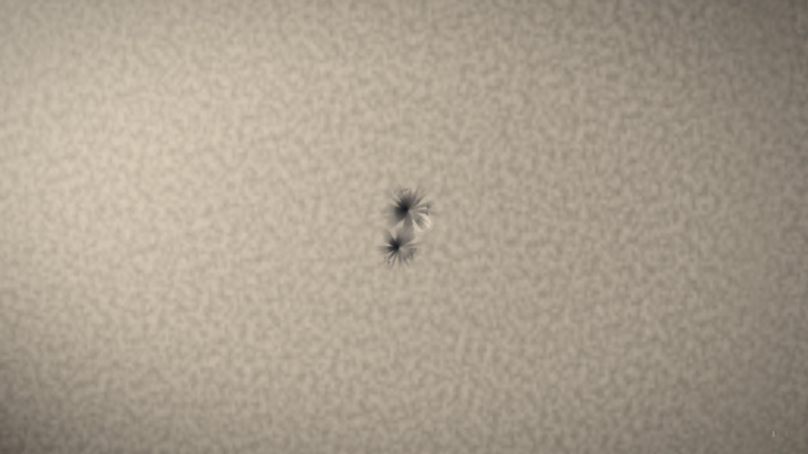
- Pieces missing, not stickers: every hole is a decal with three maps made from one shape (
fx/crater_*for a pellet alone,fx/blast_*for pellets landing together, the paper torn back in flaps and the plaster broken out round it): its colour the material under the surface and black down the hole, its normal map leaning into the hole so the light finds its walls, its occlusion darkening its depths. Tinted by what was hit. The last 180 stay; on a door they swing with it, on a box they go with the box. - What it's made of: the room's walls, floor and ceiling as the sound knows them (plaster, concrete, wood,
tile, carpet...), or a collider's own
hs_surfacemetadata (setmetalon a steel door: smears and sparks, no holes). - Dust and chips of it flying off: plaster dust, wood splinters, metal sparks.
- The explosive's blast (
impacts/explosive.tres): a scorched crater a metre across with cracks running out of it and embers glowing for a few seconds, the ball of fire with its light and smoke, everything within 2.2 m that it can see pushed and told (a dummy'sshot(info)getsblastand its damage, falling to nothing at the edge; an HSShootable counts it a hit), the view shaken, your ears ringing, every listener hearing it.
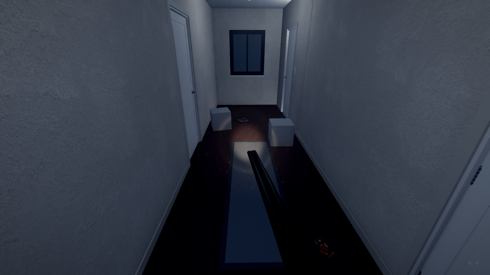
Tuning it
On impacts/pellet.tres (or your own duplicate), Together: Merge
M (pellets nearer than this, 1.6 cm, tear one hole), Merge Min (how many it takes), Soot M and Powder
M (how far the soot and the grains reach), Wad M (from where to where the wad leaves its own dent). The maps
are pictures in the plugin's fx/ folder (made by tools/weapon_fx.py): paint over them in Krita and
the plugin uses yours.
10Found in a room, and shot at
Add a Node3D, give it pickup.gd (or add an HSWeaponPickup), and set its Kind:
double
The gun lying on its side. Taken with E, the player's HSDoubleBarrel (its Owned unticked) is carried from then on and drawn up into view; Shells come with it into the pocket.
shells
A box of shells: Shells of them into the pocket, with a rattle. Lid Open shows it open (degrees), the shells inside. Shell the kind (none: buckshot; the explosive comes in its own black and orange box).

shells_box_5), two spilled beside it.
Say is a line the Story shows when it's taken; the taken signal is there to wire a scare to.
Something to shoot at
Put an HSShootable under a character (or a doll, a lamp): a shot that lands on it is a hit.
Hits is how many it takes to bring it down; each hit can make it gone for a few seconds (vanished, its
collision with it, then back: a ghost doesn't die), push it back, play a cry, say a line, or
fire a target (a scare area, a cue, the lights). Down, a gone one is gone for good. Under a lamp, tick
Lights Out: shot, its lights go dark for good in a few sparks (the dark is the price of the shot). Its hit and
down signals are there for anything else: your own scripts, an animation, the story moving on.
11In your own scripts
$Player/Eye/Shotgun.fired.connect(func(hits): print(hits.size(), " pellets hit"))
$Player/Eye/Shotgun.broke_open.connect(func(): print("the chambers are bare"))
$Player/Eye/Shotgun.give(4) # the gun, and four shells with it
$Player/Eye/Shotgun.add_shells(5) # a box picked up
var boom := load("res://addons/horrorstudio_weapons/shells/explosive.tres")
$Player/Eye/Shotgun.add_shells(2, boom) # two explosive shells
$Player/Eye/Shotgun.set_load_kind(boom) # R loads those now (T does it in play)
$Player/Eye/Shotgun.loaded = 2 # both barrels loaded at once (a cutscene's)
$Player/Eye/Shotgun.set_raised(false) # lowered for a cutscene
# on something that can be shot (it, or a node above what the pellet hit):
func shot(info: Dictionary) -> void: # {point, normal, dir, from, pellet, damage, kind}; a blast's: blast true
hp -= info.get("damage", 1.0)
# another gun's muzzle: an HSMuzzle at the end of its barrel
$Rifle/Muzzle.fire(load("res://my_flash.tres"))
Signals: fired(hits), shell_in(loaded), empty, broke_open,
closed, raised_changed(up). State: live (each barrel's), spent,
barrel_kind, loaded (set it and the chambers follow), spare, capacity,
aiming, reloading, opened, load_kind, pocket, last_kind,
chokes. Methods: pull(), reload(), set_aim(on), set_raised(up),
give(shells, kind), add_shells(n, kind), set_load_kind(kind), next_kind(),
muzzle(barrel). Where shots land: HSImpacts.of(get_tree()) (its marks, its
last_shot: the pellets, the torn holes, the ones alone, the soot, the grains, the wad; play(impact, hit)
for a hit of your own). On an HSShootable: hit(info), down,
count, is_down. A gun of your own extends HSGun (gun.gd), as the
double does.
12The numbers
- The shot: nine pellets, the right barrel's cone 0.9° (improved cylinder), the left's 0.7° (modified), 45 m reach; the pattern about 6 cm across 2.5 m out, 11 cm at 4.5 m, 22 cm at 9 m; the view kicked 3.2° and settling back 60% of it; heard as loud as three runs.
- Two barrels: as fast as you pull (a quarter second between them), then the reload: never three flashes in a second, under the flash limit.
- The reload: 1.6 s for two shells.
- The pocket: four shells to start with (Spare), two in the gun.
- The flash: about three frames (55 ms), its smoke trailing a second and a half. The explosive's: one slug, a third of the cone, a kick 1.2 times as hard, a blast of 2.2 m.
- What it leaves: pellets within 1.6 cm torn into one hole; soot within 40 cm of the muzzle, powder grains within 90 cm; the wad's own dent from 1.5 to 5 m.
Every one of these is an export on the node or its resources: change it in the Inspector.
13Good to know
- Fewer flashes: lower Flash Energy (1.5: a glow, not a flash) for players who need it.
- A click never fires while the mouse is free (a menu open, or the click that takes the mouse back).
- Against a wall the gun is still drawn whole, its muzzles past the wall: the flash lights your side and the smoke stays with you; the hulls flicked out beside a wall come down on your side.
- The hulls fall and roll by rays of their own, not as physics bodies: something that small would sink through a level's thin floor. Three rays each (its ends and its middle), so one never slips through the gap at a door's edge. The last 16 stay.
- No crosshair of its own: the HUD's dot (HorrorStudio UI) is the middle of the pattern.
- No hole lands on the gun, and the gun never shows in a mirror: it's drawn on render layer 20 (the Look plugin's: what your eye draws and a mirror doesn't).
- The flash's light barely lights the room's haze (Light Fog on its look): lit fully, the air round the muzzle glowed as a ball. Its smoke can't be blown out by the flash beside it either.